Amex / Kaggle · 458,913 customers · 200 features
Grow 60%. Hold 31%. Exit 9%.
A calibrated LightGBM ranks default risk. A constrained three-action policy grows the safest 60%, holds the middle 31%, and exits the riskiest 9%. It beats a binary approve/decline threshold in every economic scenario.
- Profit uplift vs binary
- +9.7%Stress scenario; +5.1% aggressive
- Worst-case regret
- 1.83%Three-action robust vs 4.26% binary minimax
- Expected-loss change
- -17.8%Exposure +30.7% at the same time
- Bootstrap advantage
- $102.0M95% CI [$100.6M, $103.5M]
The policy is a ruler, not a coin flip.
Cutoffs are calibrated probabilities of default. Lower is safer. The action mix is population-weighted with the 20× negative-class design weight.
| Action | Share | Bad rate | Margin | Exposure |
|---|---|---|---|---|
| Grow | 60.0% | 0.02% | +10% | +50% |
| Hold | 31.1% | 0.90% | baseline | baseline |
| Restrict | 9.0% | 15.92% | -100% | -100% |
Grow raises margin 10% and exposure 50% for the safest accounts. Hold keeps the baseline line. Restrict exits the account: zero margin, zero exposure.
The optimizer is constrained: Grow may not exceed 60% of the population, Hold must remain at least 10%, and expected loss may rise at most 10%. The selected policy binds the Grow cap exactly.
What the binary policy misses
Binary minimax cutoff 0.053124. It leaves 6.5%–10.5% of the action-oracle profit on the table.
What the guardrail costs
At a 60% Grow cap, worst-case regret is 1.83%. Raising the cap to 80% lowers regret to 1.66% — the cap is a business choice, not a modelling artifact.
“Binary scoring leaves 6.5%–10.5% of the achievable profit on the table.”Action-oracle comparison, conservative through stress
Evidence, not a headline.
All figures are generated from out-of-fold calibrated probabilities. The test labels are unavailable; this is model evidence, not a live portfolio result.
Binary versus three actions
| Scenario | Binary | 3-action | Oracle | Uplift | Binary regret | Action regret |
|---|---|---|---|---|---|---|
| Conservative | $1,176.6M | $1,256.7M | $1,258.5M | +6.8% | 6.5% | 0.15% |
| Moderate | $3,116.6M | $3,286.1M | $3,333.0M | +5.4% | 6.5% | 1.41% |
| Aggressive | $6,333.4M | $6,654.7M | $6,774.6M | +5.1% | 6.5% | 1.77% |
| Stress | $1,051.5M | $1,153.5M | $1,175.1M | +9.7% | 10.5% | 1.83% |
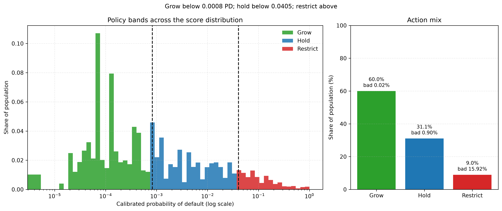
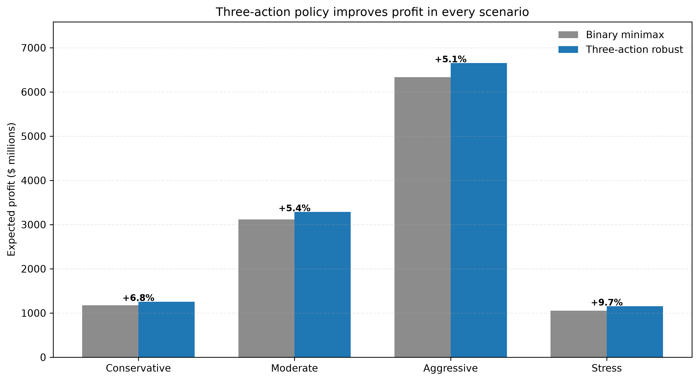
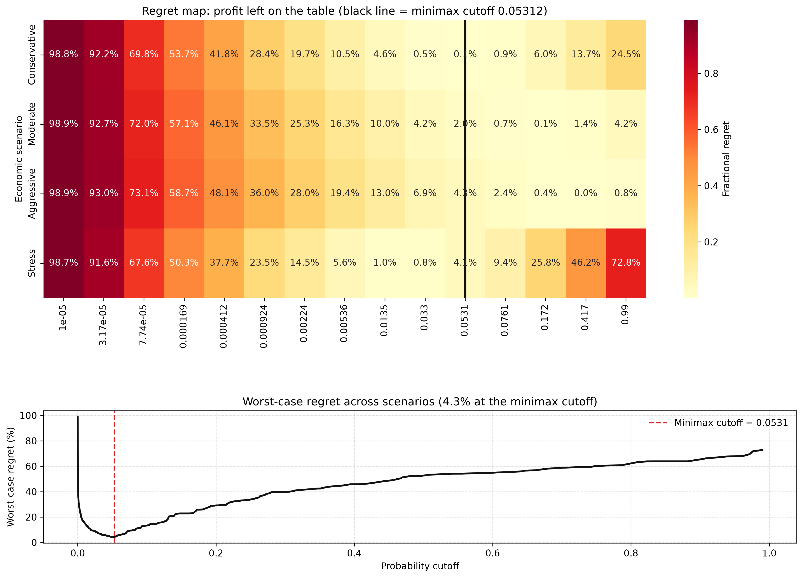
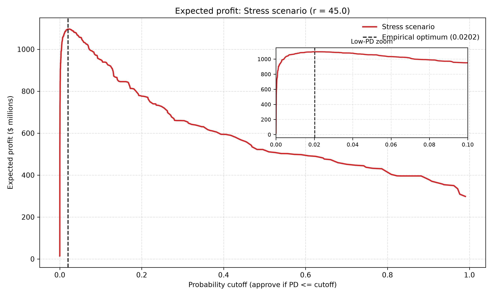
Calibration is the product.
Raw AUC 0.9585 → calibrated 0.9584. Brier 0.012211 → 0.012055. ECE 0.007%.
The cutoffs are only meaningful if a score of 0.04 means roughly a 4% chance of default. Calibration is cross-fitted: each fold’s calibrator is fit on the other folds and applied out of fold. The final isotonic map is then fit on all OOF rows for scoring.
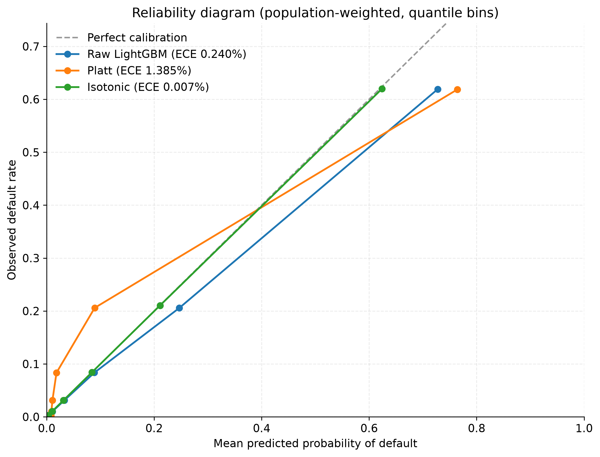
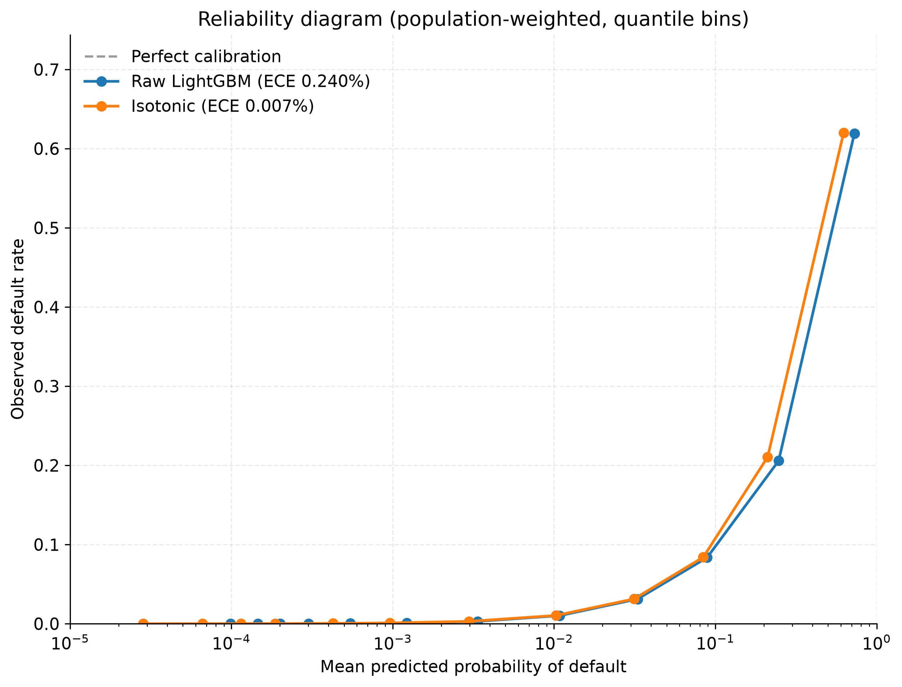
Uncertainty and power.
Paired, class-stratified bootstrap with the 20× population weight; 1,000 replicates. Power is a two-arm simulation from the population-weighted score/label distribution.
Action advantage over binary
| Scenario | Δ profit | 95% CI | p |
|---|---|---|---|
| Aggressive | $321.4M | [$318.2M, $324.5M] | <0.001 |
| Conservative | $80.1M | [$79.2M, $80.9M] | <0.001 |
| Moderate | $169.5M | [$167.8M, $171.0M] | <0.001 |
| Stress | $102.0M | [$100.6M, $103.5M] | <0.001 |
Power to detect it
| Accounts / arm | Power |
|---|---|
| 1,000 | 16.0% |
| 2,500 | 25.8% |
| 5,000 | 44.0% |
| 10,000 | 66.2% |
| 25,000 | 93.4% |
| 50,000 | 99.6% |
What it takes
A two-arm test needs roughly 17,610 accounts per arm for 80% power. At 25,000 per arm, power is 93.4%.
The confidence intervals are tight because the estimate uses 458,913 labelled accounts. They describe sampling uncertainty in this dataset, not model-risk uncertainty or future economic regimes.
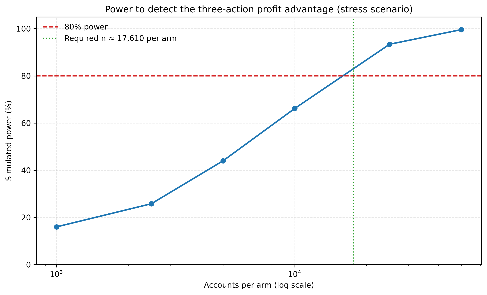
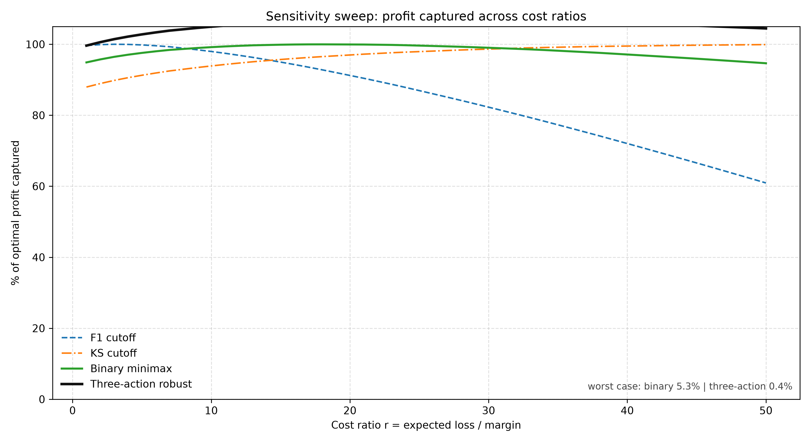
Monitoring is part of the decision.
Temporal split: earliest 80% of accounts by statement date vs latest 20%. Feature PSI is unweighted; score PSI and action mix are population-weighted.
Score PSI is 0.0003. The weighted default rate moves from 1.73% to 1.68%. The action mix moves by at most 0.34% percentage points.
The largest feature shift is B_17 (PSI 0.140). Status counts: {'green': 199, 'yellow': 1}. The retrain review is not triggered.
Retrain trigger
>10% of features with PSI > 0.25, or ≥3 delinquency/balance features above 0.25, or score PSI > 0.25, or an action share moving >5 points.
Why it matters
A PD cutoff is a promise about the population. If the population shifts, the action mix shifts with it. Monitoring the score and the action mix catches that before the next quarterly review.
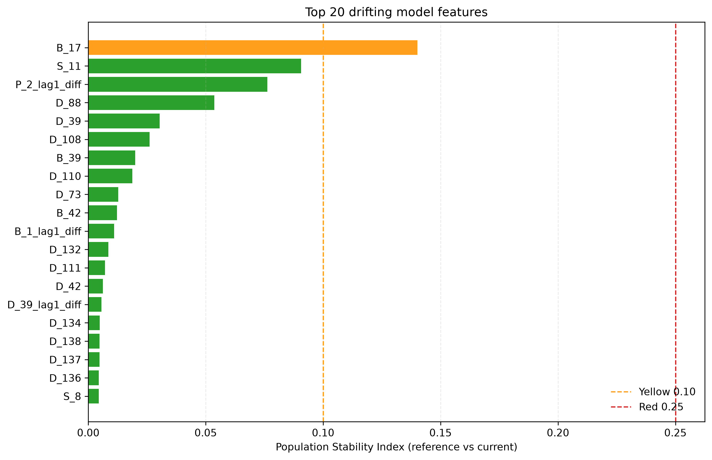
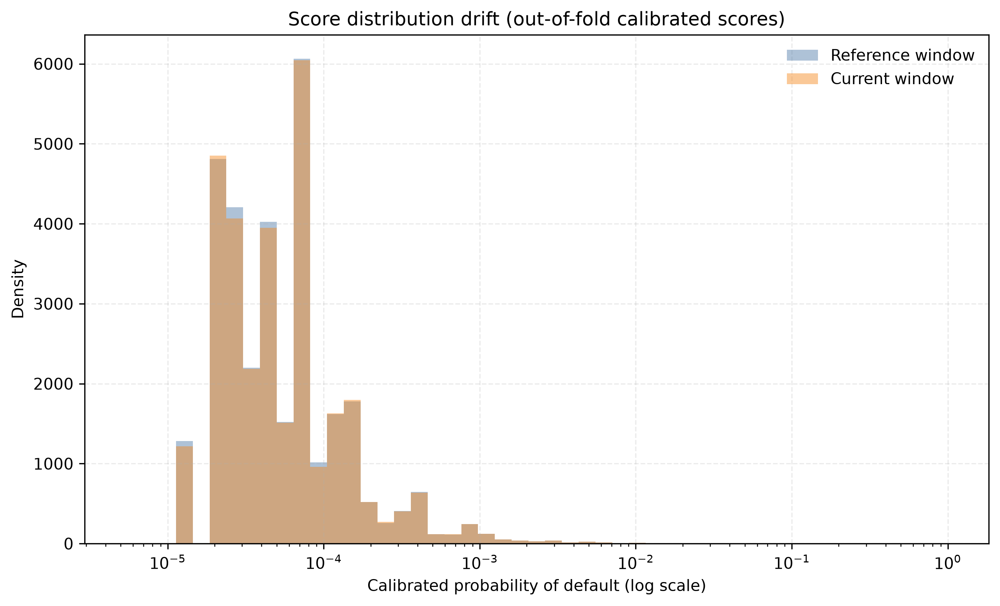
A decision a human can defend.
SHAP values explain the saved champion model, not a proxy. Reason codes are the top positive contributors to risk.
Top features
| Feature | Family | Mean |SHAP| |
|---|---|---|
| P_2 | Payment | 1.096 |
| payment_to_balance_ratio | Engineered/Other | 0.371 |
| P_2_rolling3_mean | Payment | 0.232 |
| B_4 | Balance | 0.171 |
| D_39 | Delinquency | 0.165 |
| S_3 | Spend | 0.153 |
| D_45 | Delinquency | 0.120 |
| B_3 | Balance | 0.115 |
Family contribution
| Family | Mean |SHAP| | Share |
|---|---|---|
| Delinquency (D) | 1.926 | 34.7% |
| Payment (P) | 1.441 | 26.0% |
| Balance (B) | 1.069 | 19.3% |
| Spend (S) | 0.438 | 7.9% |
| Engineered / Other | 0.371 | 6.7% |
| Risk (R) | 0.306 | 5.5% |
Example reason code
Customer 705bcf87ca98… · calibrated PD 18.81% · action Restrict
- P_2 (Payment (P)) increased risk [SHAP +0.871; value 0.4635]
- B_4 (Balance (B)) increased risk [SHAP +0.591; value 0.9898]
- D_43 (Delinquency (D)) increased risk [SHAP +0.487; value 1.164]
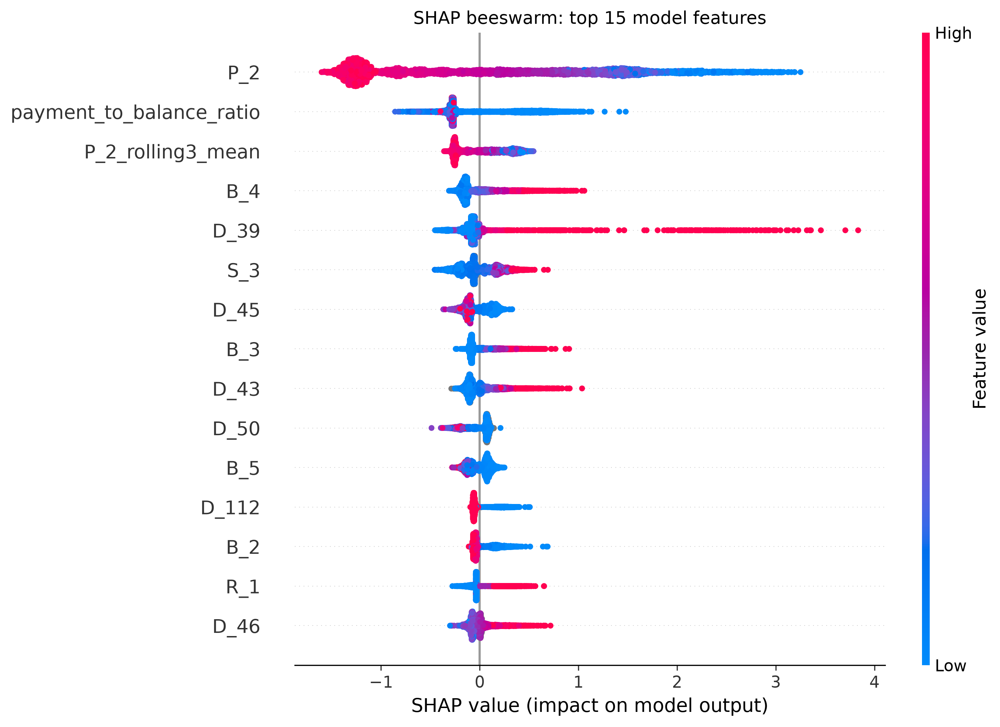
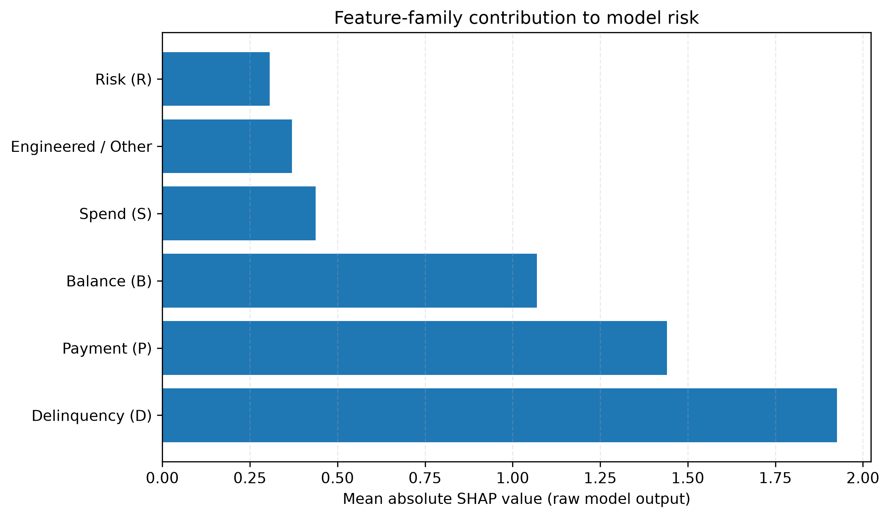
Reproduce it, or inspect the code.
The model artifacts and this page are committed. The 6.2 GB Amex parquet is not; the full pipeline is reproducible from the Kaggle CSVs.
Fast path. The committed model artifacts let you score a real-schema sample without retraining. The static page is rebuilt from committed reports.
git clone https://github.com/mahinigam/breakpoint.git
cd breakpoint
make setup
make score-demo
make demoFull path. Put the Amex CSV files in data/raw/, then run the pipeline. Training uses 5-fold OOF predictions, a final model, cross-fitted calibration, and the constrained policy.
make pipeline
make tableau
make verifyRead the detail
Guardrail sensitivity
| Grow cap | Grow cutoff | Restrict cutoff | Worst-case regret |
|---|---|---|---|
| 50% | 0.000412 | 0.040517 | 1.87% |
| 60% | 0.000827 | 0.040517 | 1.83% |
| 70% | 0.002463 | 0.040353 | 1.70% |
| 80% | 0.006632 | 0.039206 | 1.66% |